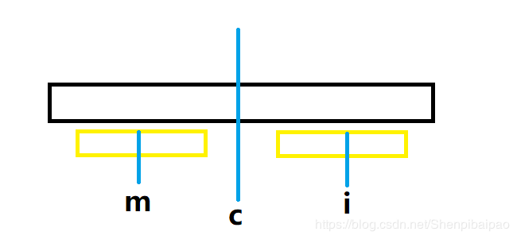
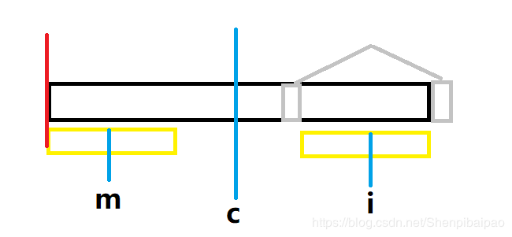
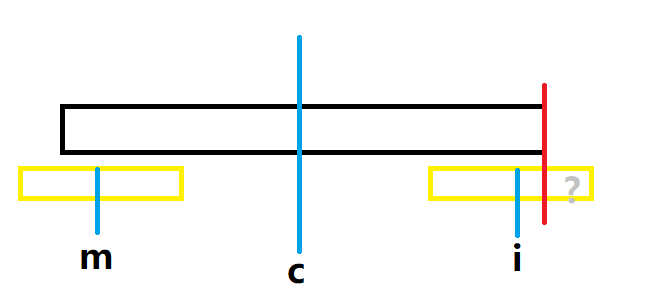

<!DOCTYPE html>
<html lang="zh" class="loading">
<head><meta name="generator" content="Hexo 3.9.0">
    <meta charset="UTF-8">
    <meta http-equiv="X-UA-Compatible" content="IE=edge,chrome=1">
    <meta name="viewport" content="width=device-width, minimum-scale=1.0, maximum-scale=1.0, user-scalable=no">
    <title>算法:Manacher算法求取最大回文子串 - WhiteRobe&#39;s Blog</title>
    <meta name="apple-mobile-web-app-capable" content="yes">
    <meta name="apple-mobile-web-app-status-bar-style" content="black-translucent">
    <meta name="google" content="notranslate">
    <link href="https://cdnjs.cloudflare.com/ajax/libs/KaTeX/0.11.0/katex.min.css" rel="stylesheet">
    <meta name="keywords" content="WhiteRobe, Blog,"> 
    <meta name="description" content="着眼实例，从最简单的开始；你觉得再简单不过的东西，或许在别人眼里那就是悬崖。而我，愿作那攀岩绳。, 前导
说起来奇怪，今天早上醒来的时候忽然想到一种根据对称性质求子串的算法。估算了一下复杂度会在线性范围内。

本着我能想到的一定早有人能想到的一贯经历，搜寻了一下Wiki，果然1975年Manac,"> 
    <meta name="author" content="WhiteRobe"> 
    <link rel="alternative" href="atom.xml" title="WhiteRobe&#39;s Blog" type="application/atom+xml"> 
    <link rel="icon" href="/img/favicon.png"> 
    <link rel="stylesheet" href="//cdn.jsdelivr.net/npm/gitalk@1/dist/gitalk.css">
    <link rel="stylesheet" href="/css/animate.css">
    <link rel="stylesheet" href="/css/fira_code.css">
    <link rel="stylesheet" href="/css/diaspora.css">
    <script async src="https://busuanzi.ibruce.info/busuanzi/2.3/busuanzi.pure.mini.js"></script>
    
        <!--站内搜索API-->
        <script src="https://cdn.jsdelivr.net/algoliasearch/3/algoliasearch.min.js"></script>
        <link rel="stylesheet" href="https://cdn.jsdelivr.net/npm/instantsearch.css@7.3.1/themes/algolia-min.css" integrity="sha256-HB49n/BZjuqiCtQQf49OdZn63XuKFaxcIHWf0HNKte8=" crossorigin="anonymous">
        <script src="https://cdn.jsdelivr.net/npm/instantsearch.js@3.4.0/dist/instantsearch.production.min.js" integrity="sha256-pM0n88cBFRHpSn0N26ETsQdwpA7WAXJDvkHeCLh3ujI=" crossorigin="anonymous"></script>
    
    <!-- <script async src="//pagead2.googlesyndication.com/pagead/js/adsbygoogle.js"></script>
    <script>
          // No more ads!
         (adsbygoogle = window.adsbygoogle || []).push({
              google_ad_client: "ca-pub-8691406134231910",
              enable_page_level_ads: true
         });
    </script>
    <script async custom-element="amp-auto-ads"
        src="https://cdn.ampproject.org/v0/amp-auto-ads-0.1.js">
    </script> -->
</head>
</html>
<body class="loading">
    <span id="config-title" style="display:none">WhiteRobe&#39;s Blog</span>
    <div id="loader"></div>
    <div id="single">
    <div id="top" style="display: block; display: block;position: fixed; top: 0px;">
    <div class="bar" style="width: 0;"></div>
    <a class="icon-home image-icon" href="javascript:;" data-url="https://blog.whiterobe.top"></a>
    <div title="播放/暂停" class="icon-play"></div>
    <h3 class="subtitle">算法:Manacher算法求取最大回文子串</h3>
    <div class="social">
        <!--<div class="like-icon">-->
            <!--<a href="javascript:;" class="likeThis active"><span class="icon-like"></span><span class="count">76</span></a>-->
        <!--</div>-->
        <div style="font-size: 1rem;margin-right: -10px">
          分享此文：
        </div>
        <div>
          <div class="share">
              <a title="获取文章地址二维码" class="icon-scan" href="javascript:;"></a>
          </div>
          <div id="qr"></div>
        </div>
    </div>
    <div class="scrollbar"></div>
</div>

    <div class="section" style="margin-top: 50px">
        <div class="article">
    <div class='main'>
        <h1 class="title">算法:Manacher算法求取最大回文子串</h1>
        <div class="stuff">
            <span>九月 06, 2019</span>
            <span id="busuanzi_container_page_pv" class="busuanzi_page" style="display:none">本文总阅读量<div id="busuanzi_value_page_pv" style="display: inline;">1</div>次</span>
            
  <ul class="post-tags-list"><li class="post-tags-list-item"><a class="post-tags-list-link" href="/tags/python/">python</a></li><li class="post-tags-list-item"><a class="post-tags-list-link" href="/tags/算法/">算法</a></li></ul>


        </div>
        <div class="low-resolution-warn-info">当前设备屏幕尺寸过小，推荐使用PC模式浏览。</div>
        <div class="content markdown">
            <h1 id="前导"><a class="markdownIt-Anchor" href="#前导"></a> 前导</h1>
<p>说起来奇怪，今天早上醒来的时候忽然想到一种根据对称性质求子串的算法。估算了一下复杂度会在线性范围内。</p>
<ul>
<li>本着我能想到的一定早有人能想到的一贯经历，搜寻了一下Wiki，果然1975年Manacher同志就给出这个算法：</li>
</ul>
<blockquote>
<p><a href="https://en.wikipedia.org/wiki/Longest_palindromic_substring" target="_blank" rel="noopener">Longest palindromic substring @ wikipedia</a></p>
</blockquote>
<blockquote>
<p>不过，也可能是很久之前曾看过这个算法，今早只是突然回想起来了罢。emmm…</p>
</blockquote>
<hr>
<h1 id="算法思路"><a class="markdownIt-Anchor" href="#算法思路"></a> 算法思路</h1>
<h2 id="归一化处理去除奇偶性"><a class="markdownIt-Anchor" href="#归一化处理去除奇偶性"></a> 归一化处理：去除奇偶性</h2>
<p>很容易注意到奇数长度的字符串和偶数长度的字符串在对称位上的值是不一样的，如：</p>
<table>
<thead>
<tr>
<th>序号</th>
<th>0</th>
<th>1</th>
<th>2</th>
<th>3</th>
</tr>
</thead>
<tbody>
<tr>
<td>字母</td>
<td>a</td>
<td>b</td>
<td>b</td>
<td>a</td>
</tr>
</tbody>
</table>
<table>
<thead>
<tr>
<th>索引</th>
<th>0</th>
<th>1</th>
<th>2</th>
<th>–</th>
</tr>
</thead>
<tbody>
<tr>
<td>字母</td>
<td>a</td>
<td>b</td>
<td>a</td>
<td>–</td>
</tr>
</tbody>
</table>
<p>对称位的序号分别为<code>[1.5]</code>和<code>[1]</code>，为了消除这种奇偶差异，Manacher利用KPM的思想，即首尾及各个值之间添加1个占位符号<code>#</code>，把任意长度的字符串变为奇数长度的字符串。以字符串<code>bccdcf</code>为例，加入占位符<code>#</code>将其去除奇偶性：(索引省略十位上的数字)</p>
<table>
<thead>
<tr>
<th>索引</th>
<th>0</th>
<th>1</th>
<th>2</th>
<th>3</th>
<th>4</th>
<th>5</th>
<th>6</th>
<th>7</th>
<th>8</th>
<th>9</th>
<th>0</th>
<th>1</th>
<th>2</th>
</tr>
</thead>
<tbody>
<tr>
<td>字母</td>
<td>#</td>
<td>b</td>
<td>#</td>
<td>c</td>
<td>#</td>
<td>c</td>
<td>#</td>
<td>d</td>
<td>#</td>
<td>c</td>
<td>#</td>
<td>f</td>
<td>#</td>
</tr>
</tbody>
</table>
<h2 id="最大回文子串目标转化"><a class="markdownIt-Anchor" href="#最大回文子串目标转化"></a> 最大回文子串：目标转化</h2>
<p>仍旧以字符串<code>bccdcf</code>为例，引入一个新的概念，中心对称序列<code>P</code>，</p>
<table>
<thead>
<tr>
<th>索  引</th>
<th>0</th>
<th>1</th>
<th>2</th>
<th>3</th>
<th>4</th>
<th>5</th>
<th>6</th>
<th>7</th>
<th>8</th>
<th>9</th>
<th>0</th>
<th>1</th>
<th>2</th>
</tr>
</thead>
<tbody>
<tr>
<td>字母 <code>T</code></td>
<td>#</td>
<td>b</td>
<td>#</td>
<td>c</td>
<td>#</td>
<td>c</td>
<td>#</td>
<td>d</td>
<td>#</td>
<td>c</td>
<td>#</td>
<td>f</td>
<td>#</td>
</tr>
<tr>
<td>序列 <code>P</code></td>
<td>0</td>
<td>1</td>
<td>0</td>
<td>1</td>
<td>2</td>
<td>1</td>
<td>0</td>
<td>3</td>
<td>0</td>
<td>1</td>
<td>0</td>
<td>1</td>
<td>0</td>
</tr>
</tbody>
</table>
<p>序列<code>P</code>的值，表示该位(<code>i</code>)上的字母<code>T[i]</code>向左向右<code>P[i]</code>个字母是具备局部最长回文性质的一个子串。例如索引<code>7</code>上的<code>P[7]=3</code>，则<code>T[7-3]</code>~<code>T[7+3]</code>是一个局部最长回文子串。</p>
<p>最后，统计整个序列<code>P</code>中的最大值，就可以找出全局最长回文子串的对称中心所在位置的索引<code>c</code>和左右延展<code>P[c]</code>，进而问题得解—— <code>T[c-P[c]]</code> ~ <code>T[c+P[c]]</code> 即为最长回文子串。</p>
<blockquote>
<p>例如，上面这个例子中，<code>c=7</code>、<code>P[c]=3</code>，最长回文串为<code>&quot;#c#d#c&quot;</code>，去除<code>#</code>即为问题的第一个可行解。</p>
</blockquote>
<ul>
<li>综上所述，求解最长回文子串问题的目标转化为了求取序列<code>p</code>的值。</li>
</ul>
<h2 id="manacher算法"><a class="markdownIt-Anchor" href="#manacher算法"></a> Manacher算法</h2>
<p>这个算法的核心思想主要有两个：</p>
<ul>
<li>对称</li>
<li>扩展</li>
</ul>
<p>主要利用这两种思想交替求取序列<code>P</code>，进而使问题得解。</p>
<h3 id="序列对称"><a class="markdownIt-Anchor" href="#序列对称"></a> 序列对称</h3>
<p>根据对称性质，我们可以很方便的求得整个序列<code>P</code>：</p>
<ol>
<li>
<p>假设我们有三个指针<code>m</code>(mirror)，<code>c</code>(center)，<code>i</code>(当前位置)，<code>i</code>与<code>m</code>关于<code>c</code>在[<span class="katex"><span class="katex-mathml"><math><semantics><mrow><mo>−</mo><mi mathvariant="normal">∞</mi><mo separator="true">,</mo><mi mathvariant="normal">∞</mi></mrow><annotation encoding="application/x-tex">-\infin,\infin</annotation></semantics></math></span><span class="katex-html" aria-hidden="true"><span class="base"><span class="strut" style="height:0.7777700000000001em;vertical-align:-0.19444em;"></span><span class="mord">−</span><span class="mord">∞</span><span class="mpunct">,</span><span class="mspace" style="margin-right:0.16666666666666666em;"></span><span class="mord">∞</span></span></span></span>]的<strong>整数</strong>数轴对称，则根据数学知识显然有 <span class="katex"><span class="katex-mathml"><math><semantics><mrow><mi>i</mi><mo>+</mo><mi>m</mi><mo>=</mo><mn>2</mn><mo>∗</mo><mi>c</mi></mrow><annotation encoding="application/x-tex">i+m = 2 *c</annotation></semantics></math></span><span class="katex-html" aria-hidden="true"><span class="base"><span class="strut" style="height:0.74285em;vertical-align:-0.08333em;"></span><span class="mord mathdefault">i</span><span class="mspace" style="margin-right:0.2222222222222222em;"></span><span class="mbin">+</span><span class="mspace" style="margin-right:0.2222222222222222em;"></span></span><span class="base"><span class="strut" style="height:0.43056em;vertical-align:0em;"></span><span class="mord mathdefault">m</span><span class="mspace" style="margin-right:0.2777777777777778em;"></span><span class="mrel">=</span><span class="mspace" style="margin-right:0.2777777777777778em;"></span></span><span class="base"><span class="strut" style="height:0.64444em;vertical-align:0em;"></span><span class="mord">2</span><span class="mspace" style="margin-right:0.2222222222222222em;"></span><span class="mbin">∗</span><span class="mspace" style="margin-right:0.2222222222222222em;"></span></span><span class="base"><span class="strut" style="height:0.43056em;vertical-align:0em;"></span><span class="mord mathdefault">c</span></span></span></span> 。(假设字符串数组<code>T</code>的索引值可以从负无穷大到正无穷大)</p>
</li>
<li>
<p>根据回文数左右<strong>对称</strong>的基本性质，若<code>P[c]</code>处是一个极大的值<span class="katex"><span class="katex-mathml"><math><semantics><mrow><mi>σ</mi></mrow><annotation encoding="application/x-tex">\sigma</annotation></semantics></math></span><span class="katex-html" aria-hidden="true"><span class="base"><span class="strut" style="height:0.43056em;vertical-align:0em;"></span><span class="mord mathdefault" style="margin-right:0.03588em;">σ</span></span></span></span>，那么指针<code>c</code>左侧与右侧在极大范围<span class="katex"><span class="katex-mathml"><math><semantics><mrow><mi>σ</mi></mrow><annotation encoding="application/x-tex">\sigma</annotation></semantics></math></span><span class="katex-html" aria-hidden="true"><span class="base"><span class="strut" style="height:0.43056em;vertical-align:0em;"></span><span class="mord mathdefault" style="margin-right:0.03588em;">σ</span></span></span></span>内必然对称。又因为<code>m</code>与<code>i</code>关于<code>c</code>对称，则<code>P[i]=P[m]</code>，进而求取整个<code>P</code>序列。</p>
</li>
</ol>
<p>这里涉及到两个假设：</p>
<ul>
<li><code>P[c]</code>的值极大。(该值极大即认为其以<code>c</code>位对称轴成最大回文串) —— 非对称情况</li>
<li>字符串数组<code>T</code>的索引值可以从负无穷大到正无穷大的整数。——边界情况</li>
</ul>
<blockquote>
<p>但在编程中显然不可能有这么便利的情况，因此还需要考虑<strong>边界情况</strong>和<strong>非对称情况</strong>。在处理这两种情况时，我们采用核心思想的第二种——<strong>扩展</strong>来求取序列<code>P</code>。</p>
</blockquote>
<h3 id="序列扩展"><a class="markdownIt-Anchor" href="#序列扩展"></a> 序列扩展</h3>
<p>事实上，当我们刚拿到一个字符串<code>T</code>时，我们既不能得到<code>c</code>和<code>P[c]</code>，也不能保证这个字符串中存在回文串(拥有局部对称性)。因此我们首先需要先构建第一个<code>c</code>。</p>
<ol>
<li>初始化</li>
</ol>
<p>选择任意字符串<code>T'</code>，去除奇偶性之后很容易发现其<code>P</code>序列前两项的值必为<code>[0 1]</code>(有些文献将自身长度也记为1，此处为了求索引的方便，不将某个字符认为自身为回文，也即为长度<code>P[0]</code>)。</p>
<figure class="highlight python"><table><tr><td class="gutter"><pre><span class="line">1</span><br><span class="line">2</span><br><span class="line">3</span><br><span class="line">4</span><br><span class="line">5</span><br><span class="line">6</span><br></pre></td><td class="code"><pre><span class="line"><span class="comment"># python3 代码</span></span><br><span class="line">m_str = placeholder+placeholder.join(st)+placeholder <span class="comment"># 去除奇偶影响</span></span><br><span class="line"></span><br><span class="line">p = [<span class="number">0</span>] * len(m_str)</span><br><span class="line">p[<span class="number">1</span>] = <span class="number">1</span></span><br><span class="line">c = <span class="number">1</span>  <span class="comment"># center 指针初始化为 1</span></span><br></pre></td></tr></table></figure>
<ol start="2">
<li>扩展以获得序列的下一位</li>
</ol>
<p>先看下方的算法框架：</p>
<figure class="highlight python"><table><tr><td class="gutter"><pre><span class="line">1</span><br><span class="line">2</span><br><span class="line">3</span><br><span class="line">4</span><br><span class="line">5</span><br><span class="line">6</span><br><span class="line">7</span><br><span class="line">8</span><br><span class="line">9</span><br><span class="line">10</span><br><span class="line">11</span><br><span class="line">12</span><br><span class="line">13</span><br><span class="line">14</span><br></pre></td><td class="code"><pre><span class="line"><span class="comment"># i 为当前想要求得的P序列索引值</span></span><br><span class="line"><span class="keyword">for</span> i <span class="keyword">in</span> range(<span class="number">2</span>, m_str_len):</span><br><span class="line">    m = <span class="number">2</span> * c - i  <span class="comment"># mirror 指针 与 i 关于 center 对称</span></span><br><span class="line">    </span><br><span class="line">    <span class="keyword">if</span> 满足扩展条件:</span><br><span class="line">        <span class="comment"># 进行扩展</span></span><br><span class="line">    <span class="keyword">else</span>: <span class="comment"># 满足对称性质</span></span><br><span class="line">        <span class="comment"># 根据对称性质复制回文序列</span></span><br><span class="line">        p[i] = p[m]</span><br><span class="line"></span><br><span class="line">    <span class="comment"># 更新最大回文串的索引值 ( center )</span></span><br><span class="line">    <span class="comment"># 取最先找到的一个</span></span><br><span class="line">    <span class="keyword">if</span> p[i] &gt; p[c]:</span><br><span class="line">        c = i</span><br></pre></td></tr></table></figure>
<p>算法的核心就在于如何界定扩展条件/对称条件。</p>
<p>在上一小节中，做出了两种假设情况，不符合这两种情况任一情况的即为满足<strong>扩展条件</strong>，否则就是<strong>对称条件</strong>，直接进行<code>p[i] = p[m]</code>的处理即可：</p>
<ul>
<li>非对称情况：以<code>c</code>为中心的<code>P[c]</code>无法保证在<code>P[c]</code>的<strong>覆盖范围</strong>中<code>i</code>与<code>m</code>保证对称性。</li>
<li>边界情况：<code>mirror</code> 越界，在编程中就是通过<code>m = 2*c-i</code> 求算m时，<code>m &lt; 0</code>的情况。</li>
</ul>
<p>边界情况相对容易理解，第一种情况(非对称情况)该如何理解呢？</p>
<blockquote>
<p>1.满足对称时：<br>
<br>
上图中，<code>m</code>、<code>c</code>、<code>i</code>为当前所求索引 <code>i</code> 关于最大中心对称点 <code>c</code> 的对称点 <code>m</code> 且满足<span class="katex"><span class="katex-mathml"><math><semantics><mrow><mi>m</mi><mo>≥</mo><mn>0</mn></mrow><annotation encoding="application/x-tex">m  \geq 0</annotation></semantics></math></span><span class="katex-html" aria-hidden="true"><span class="base"><span class="strut" style="height:0.7719400000000001em;vertical-align:-0.13597em;"></span><span class="mord mathdefault">m</span><span class="mspace" style="margin-right:0.2777777777777778em;"></span><span class="mrel">≥</span><span class="mspace" style="margin-right:0.2777777777777778em;"></span></span><span class="base"><span class="strut" style="height:0.64444em;vertical-align:0em;"></span><span class="mord">0</span></span></span></span>。<br>
黑色方框部分为以<code>c</code>为中心的<code>P[c]</code>的覆盖范围，我们自左向右求取<code>P[...]</code>的值，则<code>P[m]</code>已知且左侧黄框部分为以<code>m</code>为中心的<code>P[m]</code>覆盖范围。根据对称性可知，此时<code>P[i]=P[[m]</code>。</p>
<ul>
<li>此时满足<strong>对称条件</strong>。</li>
</ul>
</blockquote>
<blockquote>
<p>2.边界相切时<br>
<br>
当我们继续向右移动<code>i</code>，相同的<code>m</code>会向左移动，若此时左侧覆盖范围刚好与<code>P[c]</code>的覆盖范围相切，则根据对称性，右侧也应该恰好相切。</p>
<ul>
<li>不同的是，由于我们自左向右求，因此左侧的所有情况都是已知的，而右侧却是未知的。</li>
<li>在右侧相切时，可能<code>P[i]</code>覆盖范围的左侧和右侧(右侧是<code>P[c]-P[m]</code>个未被扫描过的元素)，而此时恰好满足二者相等，即满足对称性，则<code>P[i]=P[m]+x</code>，<code>x</code>为<strong>扩展过程</strong>中发现的关于<code>i</code>为对称轴的回文元素。扩展时从<code>P[m]</code>起进行左右扫描匹配即可。</li>
<li>此时满足<strong>扩展条件</strong>。</li>
</ul>
</blockquote>
<blockquote>
<p>3.左侧溢出情况<br>
<br>
<code>i</code>继续向右，若此时<code>P[m]</code>的覆盖范围超出了<code>P[c]</code>的覆盖范围，根据以<code>c</code>为对称中心的回文串的对称性质，并不能保证右侧越出红线的若干个值是以<code>i</code>为对称中心的回文串，因此需要以<code>i</code>为中心，从0起进行扩展。</p>
<ul>
<li>此时满足<strong>扩展条件</strong>。</li>
</ul>
</blockquote>
<p>概括上面三种情况，后两种满足扩展条件，因此代码为：</p>
<figure class="highlight python"><table><tr><td class="gutter"><pre><span class="line">1</span><br><span class="line">2</span><br><span class="line">3</span><br><span class="line">4</span><br><span class="line">5</span><br><span class="line">6</span><br><span class="line">7</span><br><span class="line">8</span><br><span class="line">9</span><br><span class="line">10</span><br><span class="line">11</span><br><span class="line">12</span><br></pre></td><td class="code"><pre><span class="line"><span class="keyword">if</span> m &lt; <span class="number">0</span> <span class="keyword">or</span> m-p[m] &lt;= c-p[c]: <span class="comment"># 满足扩展性质</span></span><br><span class="line">    <span class="comment"># 最大扩展半径</span></span><br><span class="line">    r = min(i, m_str_len-i<span class="number">-1</span>)  <span class="comment"># 防止数组越界</span></span><br><span class="line">    <span class="comment"># 最大已知回文半径</span></span><br><span class="line">    p[i] = <span class="number">0</span></span><br><span class="line">    <span class="keyword">for</span> j <span class="keyword">in</span> range(p[i], r):</span><br><span class="line">        <span class="keyword">if</span> m_str[i - j - <span class="number">1</span>] == m_str[i + j + <span class="number">1</span>]:  <span class="comment"># 左右扫描进行匹配</span></span><br><span class="line">            p[i] += <span class="number">1</span>  <span class="comment"># 若匹配成功，对P[i]进行自增(P[i]初始值为0)</span></span><br><span class="line">        <span class="keyword">else</span>:</span><br><span class="line">            <span class="keyword">break</span></span><br><span class="line"><span class="keyword">else</span>: <span class="comment"># 满足对称性质</span></span><br><span class="line">    p[i] = p[m] <span class="comment"># 根据对称性质复制回文序列</span></span><br></pre></td></tr></table></figure>
<blockquote>
<p>Tips：注意到上述后两种情况，已知的最大回文半径<code>P[i]</code>可以进一步设为 <code>p[i] = max(0, c + p[c] - i)</code>，以加速算法匹配速度。</p>
</blockquote>
<p>完整的实现参考下方的python代码，结合代码可以更好的理解。<br>
虽然和Wiki上的Manacher算法的解释不一致，但是本质是一样的。</p>
<hr>
<h1 id="python代码"><a class="markdownIt-Anchor" href="#python代码"></a> python代码</h1>
<blockquote>
<ul>
<li>代码去除注释，核心部分只有10行左右，很容易读懂<br>
<a href="https://gitee.com/shenpibaipao/codes/hfxk704be2a1mw96tdq5z32" target="_blank" rel="noopener">manacher @ 码云</a></li>
</ul>
</blockquote>
<figure class="highlight python"><table><tr><td class="gutter"><pre><span class="line">1</span><br><span class="line">2</span><br><span class="line">3</span><br><span class="line">4</span><br><span class="line">5</span><br><span class="line">6</span><br><span class="line">7</span><br><span class="line">8</span><br><span class="line">9</span><br><span class="line">10</span><br><span class="line">11</span><br><span class="line">12</span><br><span class="line">13</span><br><span class="line">14</span><br><span class="line">15</span><br><span class="line">16</span><br><span class="line">17</span><br><span class="line">18</span><br><span class="line">19</span><br><span class="line">20</span><br><span class="line">21</span><br><span class="line">22</span><br><span class="line">23</span><br><span class="line">24</span><br><span class="line">25</span><br><span class="line">26</span><br><span class="line">27</span><br><span class="line">28</span><br><span class="line">29</span><br><span class="line">30</span><br><span class="line">31</span><br><span class="line">32</span><br><span class="line">33</span><br></pre></td><td class="code"><pre><span class="line"><span class="function"><span class="keyword">def</span> <span class="title">manacher</span><span class="params">(st, placeholder=<span class="string">"#"</span>)</span>:</span></span><br><span class="line">    <span class="comment"># 去除奇偶影响</span></span><br><span class="line">    m_str = placeholder+placeholder.join(st)+placeholder</span><br><span class="line">    <span class="comment"># 初始化回文序列 p=[0 1 0 0 ...]</span></span><br><span class="line">    p = [<span class="number">0</span>] * len(m_str)</span><br><span class="line">    p[<span class="number">1</span>] = <span class="number">1</span></span><br><span class="line">    </span><br><span class="line">    c = <span class="number">1</span>  <span class="comment"># center初始化为1</span></span><br><span class="line">    m_str_len = len(m_str)</span><br><span class="line">    <span class="keyword">for</span> i <span class="keyword">in</span> range(<span class="number">2</span>, m_str_len):</span><br><span class="line">        m = <span class="number">2</span> * c - i  <span class="comment"># mirror 与 i 关于 center 对称</span></span><br><span class="line">        <span class="comment"># 判断p[m]与p[i]是否一致(m的左侧覆盖超出了c的左侧覆盖)</span></span><br><span class="line">        <span class="comment"># 若不一致或mirror越界(m&lt;0)则进行扩展</span></span><br><span class="line">        <span class="comment"># 注意：python中负索引是合理索引值，其它语言应自行考虑m的越界情况</span></span><br><span class="line">        <span class="keyword">if</span> m &lt; <span class="number">0</span> <span class="keyword">or</span> m-p[m] &lt;= c-p[c]:</span><br><span class="line">            r = min(i, m_str_len-i<span class="number">-1</span>)  <span class="comment"># 最大扩展半径</span></span><br><span class="line">            p[i] = max(<span class="number">0</span>, c + p[c] - i)  <span class="comment"># 最大已知回文半径</span></span><br><span class="line">            <span class="keyword">for</span> j <span class="keyword">in</span> range(p[i], r, <span class="number">1</span>):</span><br><span class="line">                <span class="comment"># 进行扩展</span></span><br><span class="line">                <span class="keyword">if</span> m_str[i - j - <span class="number">1</span>] == m_str[i + j + <span class="number">1</span>]:</span><br><span class="line">                    p[i] += <span class="number">1</span></span><br><span class="line">                <span class="keyword">else</span>:</span><br><span class="line">                    <span class="keyword">break</span></span><br><span class="line">        <span class="keyword">else</span>:</span><br><span class="line">            <span class="comment"># 根据对称性质复制回文序列</span></span><br><span class="line">            p[i] = p[m]</span><br><span class="line"></span><br><span class="line">        <span class="comment"># 更新最大回文串的索引值</span></span><br><span class="line">        <span class="comment"># 取最先找到的一个</span></span><br><span class="line">        <span class="keyword">if</span> p[i] &gt; p[c]:</span><br><span class="line">            c = i</span><br><span class="line"></span><br><span class="line">    <span class="keyword">return</span> m_str[c-p[c]:c+p[c]+<span class="number">1</span>].replace(placeholder, <span class="string">""</span>)</span><br></pre></td></tr></table></figure>
<p>&gt; <a href="./manacher.py" target="_blank" rel="noopenner">点此下载代码</a></p>

            <!--[if lt IE 9]><script>document.createElement('audio');</script><![endif]-->
            <audio id="audio" loop="1" preload="auto" controls="controls" data-autoplay="false">
                <source type="audio/mpeg" src="./theme.mp3">
            </audio>
            
        </div>
        
    <div id='gitalk-container' class="comment link"
        data-ae='true'
        data-ci='5b763306cd7b9d9c3981'
        data-cs='c31e9bf78a807055f5439caea747b09d1d9c8f18'
        data-r='image-blog.io'
        data-o='WhiteRobe'
        data-a='WhiteRobe'
        data-d='false'
    >查看评论</div>


    </div>
    
        <div class='side'>
            <ol class="toc"><li class="toc-item toc-level-1"><a class="toc-link" href="#前导"><span class="toc-number">1.</span> <span class="toc-text"> 前导</span></a></li><li class="toc-item toc-level-1"><a class="toc-link" href="#算法思路"><span class="toc-number">2.</span> <span class="toc-text"> 算法思路</span></a><ol class="toc-child"><li class="toc-item toc-level-2"><a class="toc-link" href="#归一化处理去除奇偶性"><span class="toc-number">2.1.</span> <span class="toc-text"> 归一化处理：去除奇偶性</span></a></li><li class="toc-item toc-level-2"><a class="toc-link" href="#最大回文子串目标转化"><span class="toc-number">2.2.</span> <span class="toc-text"> 最大回文子串：目标转化</span></a></li><li class="toc-item toc-level-2"><a class="toc-link" href="#manacher算法"><span class="toc-number">2.3.</span> <span class="toc-text"> Manacher算法</span></a><ol class="toc-child"><li class="toc-item toc-level-3"><a class="toc-link" href="#序列对称"><span class="toc-number">2.3.1.</span> <span class="toc-text"> 序列对称</span></a></li><li class="toc-item toc-level-3"><a class="toc-link" href="#序列扩展"><span class="toc-number">2.3.2.</span> <span class="toc-text"> 序列扩展</span></a></li></ol></li></ol></li><li class="toc-item toc-level-1"><a class="toc-link" href="#python代码"><span class="toc-number">3.</span> <span class="toc-text"> python代码</span></a></li></ol>
        </div>
    
</div>


    </div>
    <!--下悬浮返回键-->
    <div style="background: white; height:30px; width: 30px; border-radius: 16px; position: fixed; bottom: 1.5rem; right: 1.5rem; border: 2px solid rgba(0, 0, 0, 0.5)">
      <a class="icon-left image-icon" style="left:4px; top:4px" href="javascript:history.back()"></a>
    </div>
</div>
</body>
<script src="//cdn.jsdelivr.net/npm/gitalk@1/dist/gitalk.min.js"></script>
<script src="//lib.baomitu.com/jquery/1.8.3/jquery.min.js"></script>
<script src="/js/plugin.js"></script>
<script src="/js/diaspora.js"></script>
<link rel="stylesheet" href="/photoswipe/photoswipe.css">
<link rel="stylesheet" href="/photoswipe/default-skin/default-skin.css">
<script src="/photoswipe/photoswipe.min.js"></script>
<script src="/photoswipe/photoswipe-ui-default.min.js"></script>

<!-- Root element of PhotoSwipe. Must have class pswp. -->
<div class="pswp" tabindex="-1" role="dialog" aria-hidden="true">
    <!-- Background of PhotoSwipe. 
         It's a separate element as animating opacity is faster than rgba(). -->
    <div class="pswp__bg"></div>
    <!-- Slides wrapper with overflow:hidden. -->
    <div class="pswp__scroll-wrap">
        <!-- Container that holds slides. 
            PhotoSwipe keeps only 3 of them in the DOM to save memory.
            Don't modify these 3 pswp__item elements, data is added later on. -->
        <div class="pswp__container">
            <div class="pswp__item"></div>
            <div class="pswp__item"></div>
            <div class="pswp__item"></div>
        </div>
        <!-- Default (PhotoSwipeUI_Default) interface on top of sliding area. Can be changed. -->
        <div class="pswp__ui pswp__ui--hidden">
            <div class="pswp__top-bar">
                <!--  Controls are self-explanatory. Order can be changed. -->
                <div class="pswp__counter"></div>
                <button class="pswp__button pswp__button--close" title="Close (Esc)"></button>
                <button class="pswp__button pswp__button--share" title="Share"></button>
                <button class="pswp__button pswp__button--fs" title="Toggle fullscreen"></button>
                <button class="pswp__button pswp__button--zoom" title="Zoom in/out"></button>
                <!-- Preloader demo http://codepen.io/dimsemenov/pen/yyBWoR -->
                <!-- element will get class pswp__preloader--active when preloader is running -->
                <div class="pswp__preloader">
                    <div class="pswp__preloader__icn">
                      <div class="pswp__preloader__cut">
                        <div class="pswp__preloader__donut"></div>
                      </div>
                    </div>
                </div>
            </div>
            <div class="pswp__share-modal pswp__share-modal--hidden pswp__single-tap">
                <div class="pswp__share-tooltip"></div> 
            </div>
            <button class="pswp__button pswp__button--arrow--left" title="Previous (arrow left)">
            </button>
            <button class="pswp__button pswp__button--arrow--right" title="Next (arrow right)">
            </button>
            <div class="pswp__caption">
                <div class="pswp__caption__center"></div>
            </div>
        </div>
    </div>
</div>


</html>
